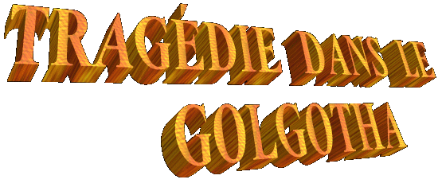
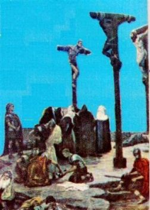
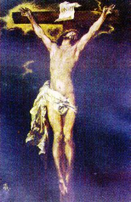
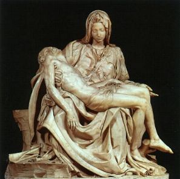

C'était un jour cendré,
avec les lourds nuages en occupant le firmament entier, se bien qui le soleil
ait apparu 
Un vent intermittent et inconfortable balayait cette scène lugubre, ayant soulevé la poussière et en enlevant les feuillages qui sont tombés des oliviers et cyprès que étaient dispersés au long de la versant dans la direction du Vallée Cédron. La terre aride et irrégulière montrait dans l’horizon le profil des montagnes, avec une tonalité marron obscur, qui fait plus sombre ce soir d'avril.
Trois rustique croix rehaussaient dans le paysage, s’en élevant de la terre avec trois hommes crucifiés. Deux étaient dans agonie de la mort avec horribles cries et dárangées des lamentations. L'homme à droite, de surnom Dimes, obstinément luttait par vaincre les crampes qui déjà prenaient possession de ses muscles, et rendait impossible sa respiration.
Germa, le crucifié de la gauche, se dábattait avec angoisse dans un effort extraordinaire pour se libérer, en rompant la solidité des clous du fer qui fixaient ses mains et pieds à la croix. Et combien plus de forcé il a fait, en imposant plus de vigueur à ses mouvements, plus des malédictions et des blasphèmes il hurlait.
Dans la croix de milieu, totalement rempli des blessures et sans vie était JÉSUS, le FILS DE DIEU. Le panorama était lugubre et seulement il inspirait compassion et pitié.
Près de la Croix de LE CHRIST, était Marie, SA chère Mère, les Saintes Femmes, et Jean éle Disciple aim». (Jean 19,25-26) Dans la proximité, étaient petits groupes que observaient. Dans un d'eux, se rencontraient Nicodámes et Joseph d'Arimathea qu’appartenaient au Grand Conseil Juif et que secrètement avaient sympathie par la Doctrine de JÉSUS. Dans un autre groupe, les personnes pleuraient et lamentaient pour LUI, en dátestant le cruel et sanglant l'épilogue pour "Ce-homme" qui avait fait seulement le bien, que seulement a enseigné ce qui était correct et qui édifiait, que a prêché la concorde et l’amour. Les lamentations étaient interrompues par les douloureux hoquets, parce qu’ils cassaient le silence qui couvrait l'atmosphère du Calvaire.
Plus à gauche de LE CHRIST, il avait un groupe de gens curieux que restaient dans l'expectative de aucun l'événement, ou bien, de quelques nouveaux faits qui pouvait se passer pour là . Prochain de ce groupe, étaient des scribes et des pharisiens, et parmi eux il y avait quelques-uns qui avaient conspiré contre Le SEIGNEUR. Ils critiquaient et raillaient de IL, sceptiques de SON pouvoir Divin.
Vinicius était le soldat Romain qui restait dans la place et regardait les crucifiés. Bien que, il était agité et effrayé, ne était pas en parvenant à contréler ses émotions dás le moment que les plusieurs manifestations de la nature que se sont passées, avec le soleil en se caché dans une longue éclipse que a répandu l'obscurité sur Jérusalem. Les éclairs et tonnerres rayaient l'espace et résonnaient avec un bruit assourdissant, comme se soit allé baisser une terrible tempête. Les tremblements de terre avaient secoué les maisons et ouvriront beaucoup des tombes, en causant panique et crainte, et, inexplicablement, le voile du Temple que sépare le Saint de Saints il se a dáchiré de haut à bas sans quelque intervention humaine.
Homme simple, avec peu de instruction, mais il a perçu que ces manifestations qui se ont passé dans le moment qu'IL a expiré n'étaient pas normales et indiquaient que quelque chose de très extraordinaire c'était en advenant. Il ne savait pas ce que c'était, mais il a imaginé qu'il ait été raconté avec le crucifié appelé JÉSUS. À cause de ce il était affligé et craintif.
Prudemment il a approché du groupe des Saints Femmes... Il voulait voir ce qu'ils faisaient, et tentait de comprendre leurs attitudes et dámonstrations des douleurs. Mais simplement ils pleuraient, un à côté de l'autre, comme se ils aient voulu dans un chemin fraternel, consoler se mutuellement ses pleures, sans qui ils aient réussi à contréler et retenir l'immense commotion que environnait tout elles mêmes. Ces événements terribles et les atrocités que JÉSUS a passé, dás las dátestables injures durant le interrogatoire, la Flagellation dans le Praetorius, la "Via Crucis" jusqu'à le Calvaire, et la mort abominable dans la Croix, ils étaient présente dans leurs cœurs et vivant dans les leurs pensées.
Vinicius a perçu le drame de ces gens et était sensibilisé. Il a évalué la grandeur de l’amour et l’affection qui les ont unis, et la mélancolie qui a pris possession des leurs cœurs. Bien qu'il ne a connu pas cet homme, ne savait rien au sujet de SA vie et de LEUR travaille, mais aussi il était triste et dásolé avec ces scènes impressionnantes.
Lentement il a soulevé son tête et a cherché dans un coup d'oeil le Visage du Crucifié. JÉSUS était avec SON tête pendu légèrement au devant, et maintenant les yeux et la bouche fermées. Des les cheveux noir et en dásordre, ont égoutté les filets de sang qui descendaient dans SON Visage, serpentant les Ses plis et cicatrices. Le Visage était horriblement blessé avec les plaies dans le côté gauche de la bouche et sur le sourcil; le nez se montrait enflé et bien écorché dans l'extrémité principale; le corps entier, dans les bras et dans les jambes, seulement se voyait marques de fouets et signes de cruauté et impitoyable violence. Plaies beaucoup profonds et autres avec peu profondeur, blessures de toutes les dimensions, cicatrices ensanglanté plein de poussière qui l'a transformé dans un spectre de homme, quoique se voyait dans la apparence de le Crucifié, le veritable l'image de la dignité et le profil d'un honnête souverain.
C'était passé des 5p.m., quand pas dans cadence militaire indiquait l'arrivée d'une garnison Romaine avec trois soldats sous l'ordre d'un homme appelé Longinus.
En observant que Dimes et Germa encore étaient vivants, ils ont cassé leurs jambes avec une barre du fer. Bien que ce il ait été une habitude barbare, était utilisé dans ce temps pour accélérer la mort des crucifiés. Parce qu'avec les jambes cassées ils pourraient ne pas forcer leurs pieds contre la croix à soulever en haut leurs corps et respirer, et ainsi, ils mouraient par asphyxie.
Quand sãont approché de
JÉSUS, ils ont vu qu'IL déjà était mort. Mais pour certifier, le Centurion
Longinus en 
Cependant, le soldat Longinus a été surprenant par la quantité de sang qui est descendu en glissant pour la lance, et a atteint son main. Irrité et en dámontrant le dágoût, il a enfoncé la lance dans la terre. Et plus tard, en essayant de maintenir l'indifférence habituelle et son tranquillité, il a cherché l'éponge qui a été utilisée pour offrir vinaigre à ces hommes crucifiés pour nettoyer la main et la lance. Toutefois il a été surpris quand a verifié que, se bien qu'il ait réussi à dáplacer l'excès de sang, la paume de son main droite, et l'extension longitudinale de la lance ont resté tachées avec le sang rouge du SEIGNEUR. Défiant et en trouvant étrange l'événement, il a caché de ses compagnons.
Pour peu de temps ils ont resté dans le Golgotha. Les trois "malfaiteurs" déjà étaient morts, par conséquence la mission était enfermée. Il a donné une voix de l'ordre et les soldats se sont alignés, y compris Vinicius, et alors ils ont retourné à la ville pour dire à Pilates sur la réalisation du travail dans le Calvaire.
Dans le parcours pour rencontrer le Procureur Romain, Longinus a commencé à sentir des réactions étranges dans son organisme. Ses bras tremblaient comme si il ait été en perdant leur force, ou comme si la lance ait été plus lourde, en ayant des difficultés pour la transporter. Aussi, il a senti une pression très grande dans la tête, semblable aux douleurs provoquées par un mal de tête ou migraine qui causait une fatigue immense et un grand dácouragement dans son corps. Il ne comprenait pas ce qui se passait. Il était jeune, fort et il était très bien de santé, il se alimentait régulièrement et, particulièrement en ce jour, dás de bonne heure se sentait joyeux et avec beaucoup de disposition pour travailler. Donc il ne comprenait pas cela qui arrivait.
Marchant avec difficulté, il a cherché cacher de ses compagnons la tension qu'il supportait, pour ne dámontrer pas faiblesse et aussi parce qu'il ne savait pas l'origine de cette réactions. Il savait que quelque chose d'anormal se passait, mais ne savait pas ce que c'était. Pour cela, il a marché en gardant silence jusqu'à le Tribunal Romain qui était près du Temple Juif.
En arrivant a là , il a
communiqué les nouvelles sur la mort des crucifiés au procureur Pilâtes, et a se
retiré à la pièce 
Dans sa vie, bien qu'il ait senti la sympathie pour quelques dieux, mais il ne cultivait pas et ni pratiquait la religion. Il n’avait pas la conviction formé sur le sujet de religion, et pour cela il se comportait même avec certaine indifférence, quand quelqu'un parlait avec lui su ce sujet. Pour cette raison, comme toujours arrive avec les personnes incrédules, ils sont facilement enveloppés par les superstitions.
Dans celui-là moment, tout seul, sa pensée divaguait nerveusement se souvenant d'une série de superstitions très communes dans ce temps, imaginant que c'était une malédiction de le Crucifié et que indiquait que ce serait le symptôme d'une maladie très sérieuse "qui le condamnait à la mort".
Mais, et la tache de sang sur la lance? Qu'est-ce que cela voudrait dire?
Et ainsi, consommé par un tourbillon de pensées, il a resté pour longtemps dans ce recoin.
Ce jour c’est fini comme tous les autres, avec un son du clairon qui a appelé les soldats à leurs logements.